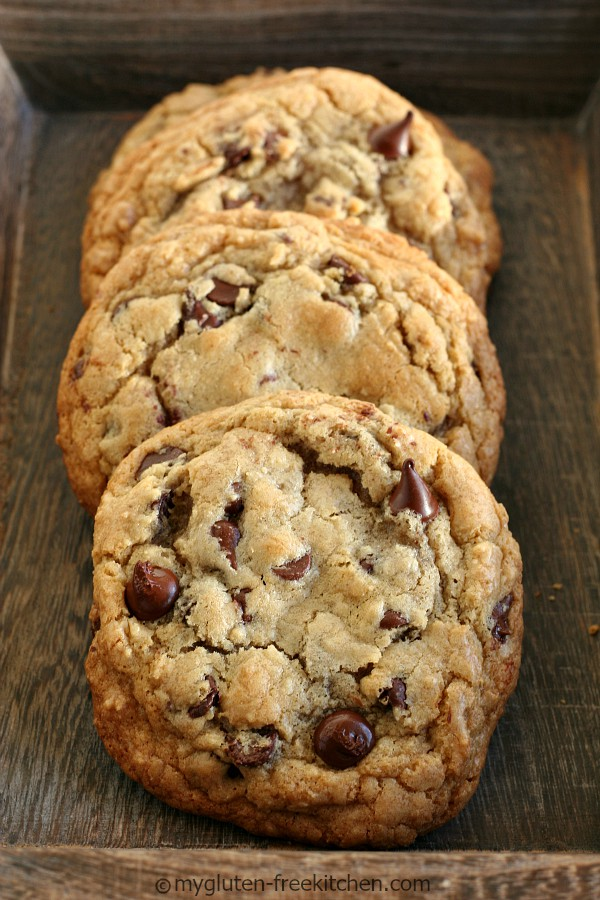

Gluten-free Chocolate Chip Cookies!

Description
By popular request, I’m sharing my tried and true recipe for the best chewy
gluten-free chocolate chip cookies! If you’re looking for gluten-free chocolate
chip cookies that have crispy edges, are chewy with a bit of a gooey center, and
full of chocolate, then these are the cookies for you!
Ingredients and Substitutions for this Recipe -- A Detailed Look Before We Go
- Gluten-free Flour Blend: I’ve had best results making this with
Authentic Foods Multi-Blend Flour or
BakeGood Almond Flour Blend or
Gluten Free Mama’s Almond Blend. I tried with
Cup4Cup gluten-free flour with good results. (Note, usually gfJules is one of my go-to
blends, but it is a little too starchy to get the right chewy texture with gooey center in
this recipe. It still makes a very good cookie, just won’t be as chewy or gooey.) These were
good but not great with King Arthur Measure for Measure or Bob’s Red Mill. I do not recommend
using Maninis, Namaste or Pillsbury gluten-free flour for these. I will update this as I try it
with other flour blends as well. Stay away from the blends that have any bean flours.
- If the gluten-free flour blend you choose to use already has xanthan or guar gum already in it,
then omit the xanthan gum called for in my recipe.
- Sugar and Brown Sugar: I don’t recommend swapping these out, but some people prefer to use
coconut sugar for some of the sugar called for in the recipe, just know that it will affect
the texture.
- Butter: You can use a non-dairy butter alternative like Melt or Earth Balance if you would
prefer. I would still melt it to use in the recipe. Results will vary and will not likely
look the same as my cookies, because mine are made with real butter.
- Cream cheese: I have used
Kite Hill plain cream cheese alternative and it worked very well. Use equivalent
amount.
- Baking soda: This is NOT the same as baking powder. DO not substitute the baking soda with
anything else.
- Chocolate: These are loaded with chocolate so choose your favorite chocolate! Sometimes I do
semi-sweet chocolate chips like you see here (usually
Guittard or Trader Joe’s), sometimes I do a mix of
semi-sweet chunks and
mini chips.
If you prefer milk chocolate, then use
milk chocolate chips
in yours.
Ingredients
- 2 1/4 cups (~282 grams) good all-purpose gluten-free flour
- 1/2 tsp. xanthan gum* (see note)
- 1 tsp. baking soda
- 1 tsp. salt
- 2 ounces cream cheese, room temp
- 3/4 cups (12 Tbsp.) unsalted butter, melted
- 1 cup packed brown sugar
- 1/2 cup sugar
- 1 1/2 tsp. pure vanilla extract
- 2 egg yolks
- 2 cups (12 oz.) semi-sweet chocolate chips
Note:
*omit xanthan gum if your gluten-free flour blend has xanthan or guar gum already
Steps
- In a medium bowl, whisk together gluten-free flour, xanthan (unless flour blend already has xanthan or guar gum),
baking soda and salt. Set aside.
- In the bowl of your stand mixer, place the cream cheese, then pour melted butter over it. Add brown sugar and
sugar and mix on medium speed for 2 minutes. (I use the paddle attachment on my mixer.)
- Using just egg yolks, no egg whites to help with the chewiness of the cookie. This is an old trick I learned from
Alton Brown. I like to use an egg separator so that I don’t end up with any stray shells or break the yolks in
the process.
- Add vanilla extract and egg yolks (one at a time) mixing on low-medium speed until well mixed.
- Add the flour mixture that you set aside earlier, beating on low until just combined.
- Add the chocolate chips and mix on low or by hand, just until mixed thoroughly.
- Cover the mixing bowl with plastic wrap and refrigerate a minimum of 4 hours and up to 4 days.
- When you are ready to bake, remove from refrigerator and allow it to come closer to room temperature so you
can scoop the cookies easily before baking.
- Preheat oven to 375°.
- Line cookie sheets with sheets of parchment paper or silicone liners. Do not spray!
- Use a #20 cookie scoop to scoop even mounds of cookie dough spaced several inches apart. I can get 12 per
cookie sheet.
- Bake the cookies for 11-12 minutes at 375°. Remove when edges are set and just browning. The centers will look
undercooked, but will continue cooking as they cool. To ensure you don’t over bake, I suggest you bake a few test
cookies so you can determine the right baking time for your oven. If you like gooey centers, cook less, if you like
crunchier cookies, cook longer
- If you’d like, you can sprinkle more chocolate chips on them once you remove from oven.
- Let the cookies sit on the cookie sheet for just 2-3 minutes before removing to a cooling rack to finish cooling.
NOTE: I copied and pasted this text from other websites on the internet as coding practice in HTML and CSS.